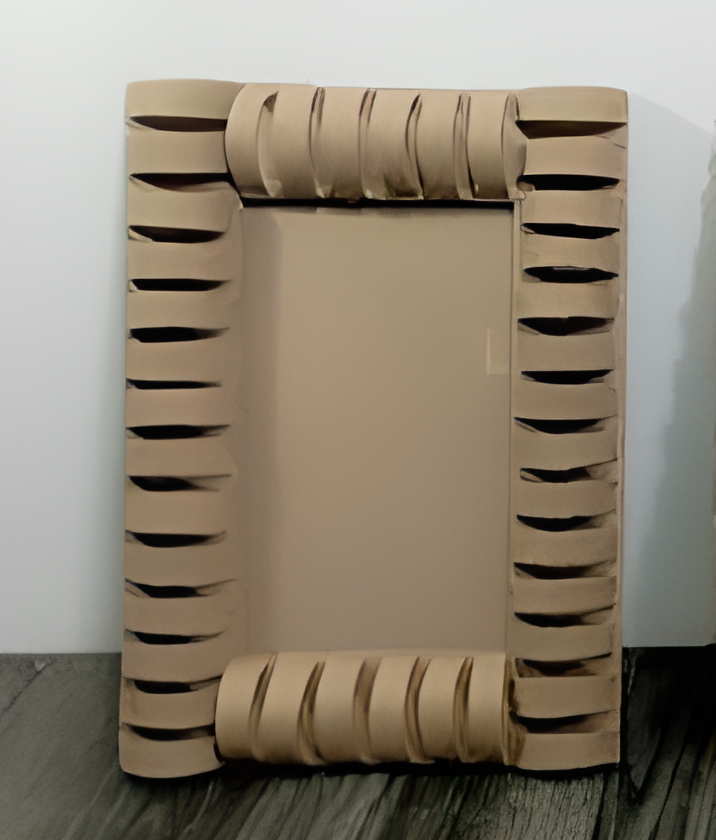
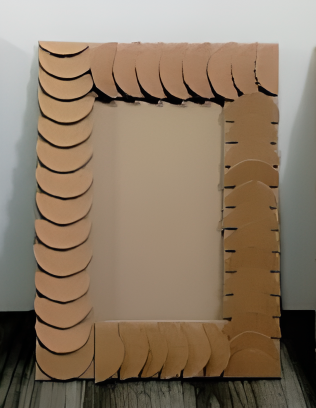
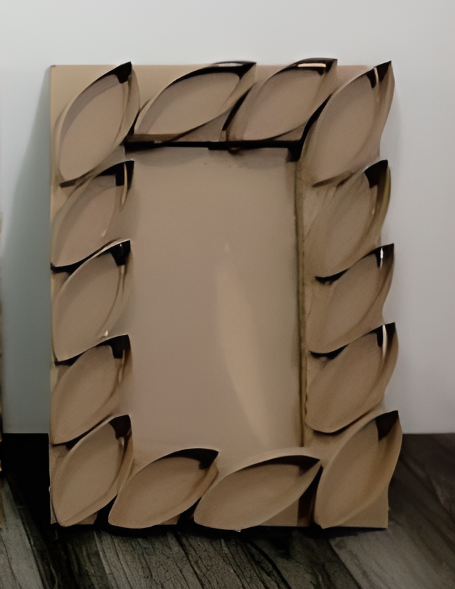

Recorta un trozo de cartón con medidas de 18 cm x 25 cm. Este será el marco del portarretrato.
En el centro del cartón, corta un rectángulo dejando 4 cm de distancia entre el borde y el centro. Esta apertura permitirá que la imagen se vea al pegarla en la parte posterior.
Recorta otro trozo de cartón con medidas de 21 cm x 14 cm. Esta será la base del portarretrato.
Corta dos tiras de cartón con medidas de 1 cm x 25 cm y una tira de 1 cm x 28 cm.
Pega las dos tiras de cartón a lo largo de los bordes del cartón base y deja solo una tira en el ancho. Esto creará un espacio donde se podrá colocar la foto.
Tipos de decoración:
Para el primer tipo de decoración, se tienen que hacer círculos de 4 cm y cortarlos por la mitad, luego pegar las mitades en el cartón. En un lado, coloca la parte larga ovalada hacia arriba, y en el otro lado, colócala hacia abajo. En el ancho, puedes voltear las mitades hacia la derecha o hacia la izquierda.

Para el segundo tipo de decoración, corta el tubo de papel higiénico por la mitad de forma vertical y luego córtalo en tiras horizontales. Después pega las puntas de las tiras en el portarretrato.

Para el tercer tipo de decoración, toma un tubo de papel higiénico y aplanalo para que quede liso, córtalo en tiras horizontales mientras el tubo está en posición vertical, abre un poco las tiras y dales forma de hojas. Pega las tiras en el portarretratos.

Y por último te queda decorar a tu gusto!
Esperamos que te sirva esta manualidad y aproveches los materiales que tienes a tu alcance para hacerla. Si quieres tener el proceso del paso a paso más detallado, te dejamos el link para que puedas hacerlo.